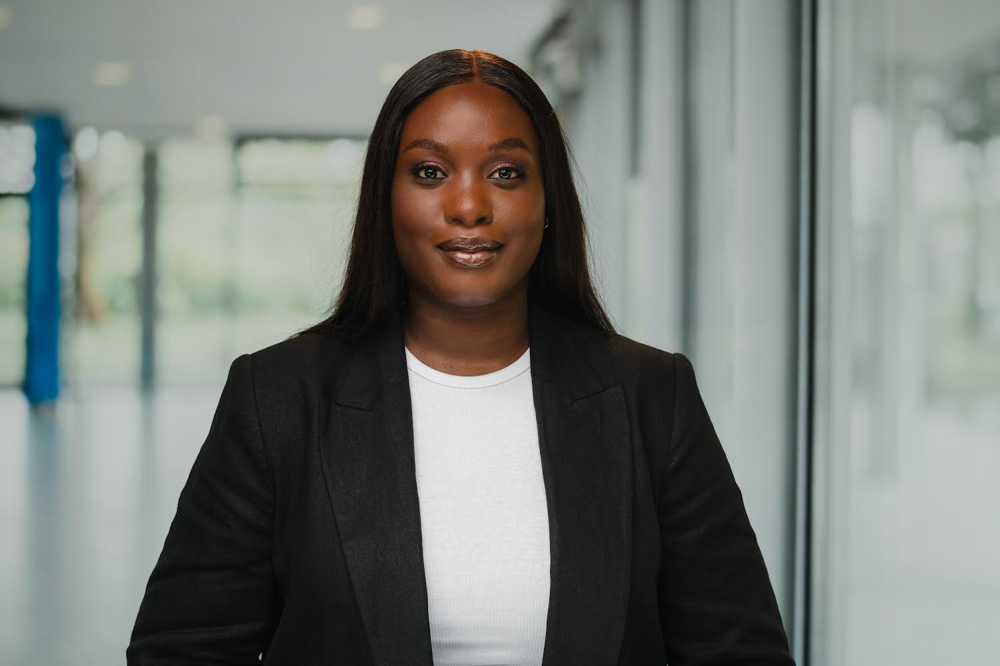

RESUME

PERSONAL DATA
| Name: |
Kelechi Ibeleche |
| Address: |
Busstraße 54, 12365 Bücherstadt |
| Mobile: |
017566783646 |
| Email: |
Kelechi.Ibeleche@gmail.com |
| Marital Status: |
Married |
WORK HISTORY
05/2024 - 10/2024 - Digital Content Marketing Specialist (Migrando UG)
Content strategy development
Creative content production
Audience engagement optimization
Brand storytelling
Social media management
06/2022 – 07/2023 - Content Marketing Specialist (Bitburst GmbH)
Push marketing
Email marketing
Content creation
Social media management
Event management
03/2022 – 06/2022 - Research Executive (B2B International GmbH)
Desk research
Data coding
Report writing
Qualitative and Quantitative data analysis
EDUCATION
10/2020 – 06/2023 - MA. International Marketing and Sales
University of Applied Sciences, Münster
09/2012 – 11/2017 - B.Agric.Tech Agricultural Economics
Federal University of Technology, Owerri
SKILLS
| Applications |
Adobe creative Suite
MS Office Suite
Visual studio code
Clever Tap
MAXQDA
Zoho CRM
HeyGen
Salesforce
| Personal Skills |
Learning & Adaptability skills
Written & Oral communication skills
Team collaboration oriented
Excellent netwroking skills
Great organization & managerial skills
Leadership experience
| Languages |
English Native speaker
German B2
| Interests |
Content creation
Choir singing
Tourism